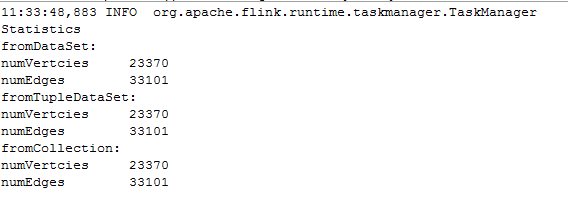

Know your Graph
In this very short tutorial, we will see how to get some statistical information out of our graph. Gelly includes built-in methods for retrieving various graph properties and metrics.
Suppose that we want to retrieve information regarding the number of vertices and number of edges. Then, we can simply do as follows:
Long numVertices = graph.numberOfVertices();
Long numEdges = graph.numberOfEdges();
In a directed graph, the indegree of a node is the number of edges pointing towards that node while the outdegree is the number of edges going out of it. The total degree is the sum of both in and out degrees. Gelly allows to get the degree information (IN,OUT,ALL ) of every node by it's easy to use built in methods:

DataSet<Tuple2<Long, Long>> vertexOutDegrees = graph.outDegrees();
DataSet<Tuple2<Long, Long>> vertexInDegrees = graph.inDegrees();
DataSet<Tuple2<Long, Long>> totDegrees = graph.getDegrees();
In the last tutorial, we had learnt how to create a graph using three different approaches. Here is a snapshot of some statistics obtained by calling the numberOfVertices and numberOfEdges methods for all the three approaches. The same statistical methods were called for the different ways of graph creation, just to show the consistency among them; results are dependent upon the data set used and not on the chosen approach. Our statistics confirm that the used twitter data set consists of 23370 users (vertices) and 33101 edges (follows) as mentioned on the download site.


A piece of cake,isn't it?!
Below is a full list of methods that can be
used to retrieve metrics and statistics in Gelly.
// get the Vertex DataSet
DataSet<Vertex<K, VV>> getVertices()
// get the Edge DataSet
DataSet<Edge<K, EV>> getEdges()
// get the IDs of the vertices as a DataSet
DataSet<K> getVertexIds()
// get the source-target pairs of the edge IDs as a DataSet
DataSet<Tuple2<K, K>> getEdgeIds()
// get a DataSet of <vertex ID, in-degree> pairs for all vertices
DataSet<Tuple2<K, Long>> inDegrees()
// get a DataSet of <vertex ID, out-degree> pairs for all vertices
DataSet<Tuple2<K, Long>> outDegrees()
// get a DataSet of <vertex ID, degree> pairs for all vertices, where degree
//is the sum of in- and out- degrees
DataSet<Tuple2<K, Long>> getDegrees()
// get the number of vertices
long numberOfVertices()
// get the number of edges
long numberOfEdges()